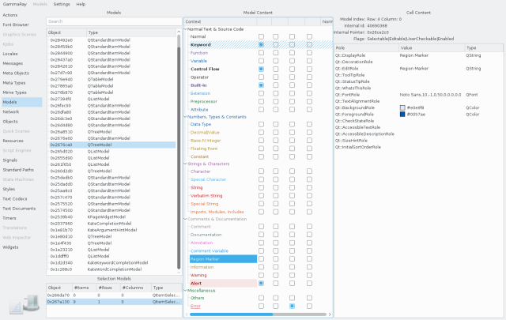

The model inspector allows you to look at QAbstractItemModel instances, chains of QAbstractProxyModel instances built on top of these, as well as QItemSelectionModel instances associated with any of them.

The model view on the top left shows a list of all QAbstractItemModel instances in the target application. Selecting a model shows its content in the model content view at the center. In the model content view, you can select a single cell for inspecting its content in detail. The cell content view on the right will show you:
If the source model allows changing values, you can edit the value column in the cell content view.
The context menu on the model list allows navigation to and from the QObject browser for analyzing object properties.
If the target application uses QAbstractProxyModel instances, those are shown in the tree view in the upper left, beneath there corresponding source model. This allows you to inspect intermediate results of proxy model chains.
For each selected model, the selection model list on the lower left shows all QItemSelectionModel instances for that model, as well as how many cells, rows, and columns are currently selected. Selecting a selection model shows its current selection in the model content view at the center.
The context menu on the selection model list allows navigation to and from the QObject browser for analyzing object properties.